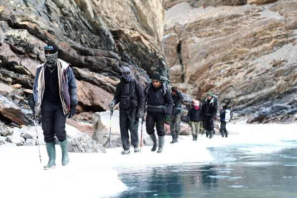
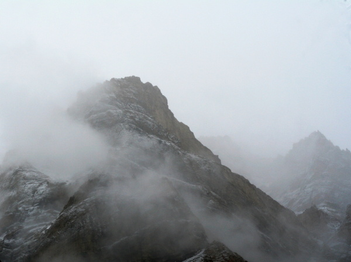
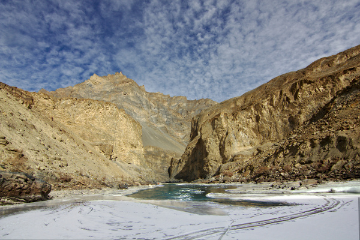
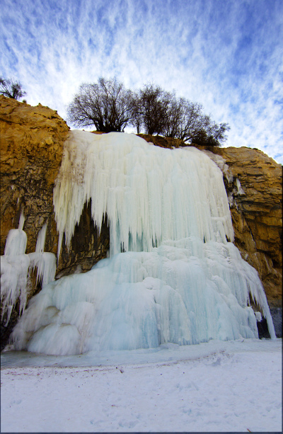

Walking in Wonderland - Trekking across the frozen Chadar
On no other trek could I have truthfully said that I was struck by a sense of wonder every time I looked up and around. We seemed to be walking and living in wonderland. It was much later, after seeing the reactions of others to the pictures that I realised that this was a near universal feeling, not something limited to me. Perhaps it was the simplicity of the landscape - ice, green waters, blue skies and brown cliffs.
Couple of months ago, when we started planning to do the Chadar trek, with a sense of urgency imparted by news of a road that was coming up along the river, I had been a little worried that this simplicity of landscape might turn out to be monotonous. Thankfully, these turned out to have been unfounded and in the end, I was simply glad I came.
The Zanskar valley in the Himalayas is one of the most inaccessible inhabited places in the world. It is also one of the coldest inhabited places on earth, and in winter, with the snow and ice, all routes over land are closed and villages deep in the valley become isolated. For centuries these villagers have then used the frozen blanket of ice (chadar) over the Zanskar river to reach the rest of the world. The cold, along with the high walls of the valley that makes it difficult for sunlight to enter, ensures a good ice cover in winter. At present, the road from Leh reaches upto Chilling, leaving about 70 km of trekking over the frozen river before reaching the village at Nerak. Even as we trekked, the road was being extended further from Chilling, so there is a real chance of the romance of the trek being lost in a couple of years if there is road going all the way.
Difficulty wise, there was conflicting advice before the trek. Obviously the temperature was the major concern. But looking back now, this was a moderate trek at most. It was never physically demanding and there were none of the altitude problems that plagued me on the Stok Kangri climb. Walking on the ice was an interesting experience. There is the legend of eskimos having a large number for snow. The varieties of ice we saw and became familiar with was a good illustration of how this might be true. With experience and a few falls we learned to recognize the glassy, smooth surfaced that posed the greatest risk of a slip and fall, the still smooth surfaced, but milky ice that had a better grip, ice with a brittle top layer that would crumble with pressure and provide good friction, and many more … Slipping on the ice was unpredictable and not that funny, except for the people watching. But luckily for us, at the turn around point, Nerak, it snowed overnight. That transformed the whole route and the hitherto slippery ice became much easier to negotiate.
Photography was an interesting challenge. The landscape with crystal clear waters was picturesque and the open expanses were suited for wide angle lenses. However, one of the problems was the rarity of sunlight. The high valley walls meant that we saw the sun rarely even when the sky was clear. When light did come in, it was difficult to avoid the sharp shadows. The other problem was that the amount of white ice in most frames will fool the automatic exposure into underexposing the pictures. So, unless you intentionally ‘overexpose’ the pictures, the landscape would come out dull grey. Despite the challenges, in the final reckoning, the pictures came out quite well.
 Some of the best moments of the trek were when I was walking alone. Opportunities to do this were limited, due to the substantial number of groups trekking at the same time and the relative safety of staying together when walking on ice. On the last day of the return, I felt fresh and strong and pushed on at the front for most of the day until I ran out of steam at the end. But the more memorable moment was on the third day on one of the first occasions that I strayed from the pack. Among the curving segments of the river, I soon found myself quite alone with noone to see ahead of or behind me and was enjoying the solitude. And then I was dragged out of my reverie to notice that I could not make out any footprints of drag marks from the walking poles anywhere near me. I was somewhere near the middle of the river and the ice glistened pristine all around me without the reassuring footprints that would indicate that someone had safely walked here. The ice was sloping and smooth in front of me and looked too risky to walk across. On the side, it looked brittle. I stood there, wondering what to do and then there was a creeeak.. on one side as some ice cracked. As I stood absolutely still, there followed a creeeeak.. on the other side and I was having visions of the ice breaking all around and leaving me floating on a raft in hollywood style. Of course, I was able to retrace some steps safely and come around by a sturdier path, but that moment remains frozen in memory - standing alone in the middle of the frozen sheet with the groans of cracking ice all around, not daring to take a step in any direction!
Comments
Comments powered by Disqus